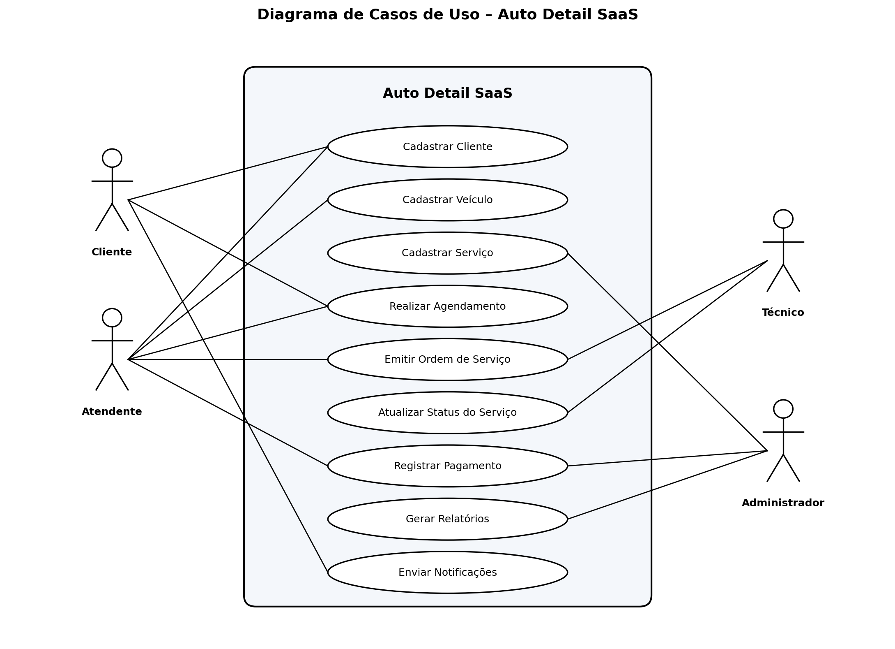

INSTITUIÇÃO DE ENSINO
CURSO DE SISTEMAS DE INFORMAÇÃO
AUTO DETAIL SAAS: SISTEMA DE GESTÃO PARA EMPRESAS
DE ESTÉTICA AUTOMOTIVA
Projeto de Sistema com Entregas por Aula – AP2
Thalles Malini Diepes
2026
O mercado de estética automotiva no Brasil tem apresentado crescimento consistente nos últimos anos, impulsionado pelo aumento da frota de veículos, pela valorização do bem por parte dos proprietários e pela ampliação da oferta de serviços especializados, como lavagem técnica, polimento, vitrificação, higienização interna e proteção de pintura. Apesar dessa expansão, grande parte dos estabelecimentos do setor ainda opera com controles manuais ou planilhas, o que dificulta o gerenciamento de agendamentos, o acompanhamento do histórico do cliente e a análise do desempenho financeiro. Nesse contexto, surge a necessidade de uma plataforma digital especializada, capaz de automatizar processos, organizar informações e oferecer uma experiência mais profissional tanto para o lojista quanto para o consumidor final.
O presente trabalho propõe o desenvolvimento do Auto Detail SaaS, uma plataforma web ofertada no modelo de Software as a Service, voltada à gestão integral de empresas de estética automotiva. O sistema contempla módulos de cadastro de clientes e veículos, catálogo de serviços, geração de orçamentos, controle de ordens de serviço, controle financeiro, envio automatizado de notificações ao cliente via WhatsApp e geração de indicadores gerenciais. A solução é acessível por meio de navegadores em computadores e dispositivos móveis, com interface responsiva e armazenamento em nuvem.
O público-alvo do sistema compreende, principalmente, micro, pequenas e médias empresas do segmento de estética automotiva, incluindo lava rápidos, centros de detalhamento, oficinas especializadas em polimento e vitrificação, além de profissionais autônomos da área. De forma secundária, o sistema também beneficia os clientes finais desses estabelecimentos, que passam a contar com canais digitais para acompanhamento dos serviços contratados.
O objetivo geral do Auto Detail SaaS é centralizar e automatizar as principais rotinas operacionais e gerenciais de empresas de estética automotiva, oferecendo uma ferramenta única, segura e acessível, capaz de aumentar a produtividade, reduzir falhas operacionais e melhorar a experiência do cliente. Entre os objetivos específicos destacam-se: organizar a geração e o acompanhamento de orçamentos, manter o histórico completo de clientes e veículos, controlar receitas por período e fornecer indicadores para a tomada de decisão estratégica.
Muitas empresas do ramo de estética automotiva ainda enfrentam dificuldades operacionais decorrentes da ausência de um sistema especializado. Os agendamentos costumam ser feitos por aplicativos de mensagens, sem padronização, gerando conflitos de horários, esquecimentos e retrabalho. O histórico de serviços prestados a cada veículo raramente é registrado de forma estruturada, o que prejudica ações de fidelização e a oferta de manutenções preventivas. O controle financeiro, por sua vez, é frequentemente realizado em cadernos ou planilhas isoladas, dificultando a análise de rentabilidade por serviço, por cliente ou por período. Tais limitações comprometem a competitividade, a profissionalização e o crescimento sustentável dessas empresas.
A proposta do Auto Detail SaaS justifica-se pela demanda crescente por digitalização no setor de serviços automotivos, aliada à necessidade de soluções acessíveis e específicas para a realidade das empresas de estética automotiva. Ao adotar o modelo SaaS, o sistema elimina a necessidade de infraestrutura de servidores próprios, reduzindo o custo de adesão e permitindo atualizações contínuas. A plataforma também responde a tendências de mercado, como o atendimento omnichannel, a automação de notificações e a análise de dados para tomada de decisão, contribuindo para a profissionalização do segmento e para a melhoria da experiência do consumidor.
A importância do tema reside no impacto direto que a transformação digital exerce sobre pequenos e médios negócios, especialmente em segmentos tradicionalmente analógicos como o de estética automotiva. Sistemas de gestão especializados aumentam a eficiência operacional, favorecem a sustentabilidade financeira, elevam o nível de serviço percebido pelo cliente e geram dados estratégicos para o planejamento. Do ponto de vista acadêmico, o desenvolvimento do Auto Detail SaaS permite a aplicação integrada de conhecimentos de Engenharia de Requisitos, Modelagem de Sistemas, Banco de Dados, Engenharia de Software e Experiência do Usuário, consolidando as competências esperadas em um profissional da área de Sistemas de Informação.
Este capítulo apresenta o levantamento de requisitos do Auto Detail SaaS, organizado em três categorias: requisitos funcionais (RF), que descrevem o que o sistema deve fazer; requisitos não funcionais (RNF), que estabelecem critérios de qualidade; e regras de negócio (RN), que definem restrições e políticas do domínio.
| Código | Nome | Descrição |
|---|---|---|
| RF01 | Cadastro de clientes | O sistema deve permitir o cadastro, edição, consulta e inativação de clientes, contendo nome completo, CPF, telefone, e-mail e endereço. |
| RF02 | Cadastro de veículos | O sistema deve permitir o cadastro de um ou mais veículos vinculados a cada cliente, registrando placa, marca, modelo, ano e cor, com busca automática na tabela FIPE. |
| RF03 | Catálogo de serviços | O sistema deve permitir o cadastro do catálogo de serviços oferecidos (lavagem, polimento, vitrificação, higienização), com descrição, duração estimada e valor unitário. |
| RF04 | Agendamento online | O sistema deve permitir o agendamento de serviços pelo cliente ou pelo atendente, considerando data, horário, profissional e disponibilidade do box de atendimento. |
| RF05 | Ordem de serviço | O sistema deve permitir a emissão de ordens de serviço contendo cliente, veículo, serviços contratados, valores, profissional responsável e status (aberta, em execução, concluída, cancelada). |
| RF06 | Controle financeiro | O sistema deve registrar pagamentos recebidos, formas de pagamento e gerar relatórios financeiros por período, cliente e tipo de serviço. |
| RF07 | Notificações automáticas | O sistema deve enviar notificações automáticas, por e-mail e/ou WhatsApp, de confirmação de agendamento, lembrete e finalização do serviço. |
| Código | Categoria | Descrição |
|---|---|---|
| RNF01 | Desempenho | O sistema deve responder a 95% das requisições em tempo inferior a três segundos, sob carga normal de uso. |
| RNF02 | Disponibilidade | Por se tratar de uma solução SaaS, o sistema deve manter disponibilidade mínima de 99,5% ao mês, com janelas de manutenção programadas em horários de baixo uso. |
| RNF03 | Segurança | O sistema deve trafegar todas as informações sob protocolo HTTPS, armazenar senhas com hash criptográfico e oferecer autenticação via provedor de identidade confiável (Google OAuth). |
| RNF04 | Usabilidade e responsividade | A interface deve ser responsiva, compatível com navegadores atualizados e adequada ao uso em dispositivos móveis, com suporte a tema escuro. |
| RNF05 | Conformidade legal | O sistema deve estar em conformidade com a Lei Geral de Proteção de Dados (Lei nº 13.709/2018), oferecendo controle de consentimento e exclusão de dados pessoais sob solicitação. |
| Código | Nome | Descrição |
|---|---|---|
| RN01 | Conflito de agendamento | Não é permitido alocar dois serviços no mesmo box de atendimento, para o mesmo profissional e no mesmo horário. O sistema deve bloquear automaticamente horários sobrepostos. |
| RN02 | Bloqueio por inadimplência | Clientes com pagamentos em aberto há mais de 60 dias ficam automaticamente bloqueados para novos agendamentos, sendo liberados apenas após a quitação do débito. |
| RN03 | Política de descontos progressivos | Clientes que contratarem mais de cinco serviços dentro do mesmo mês recebem desconto progressivo de 5% a 15% nos serviços subsequentes do período, conforme tabela definida pela administração. |
Este capítulo apresenta a modelagem do Auto Detail SaaS por meio da identificação dos atores envolvidos, do diagrama de casos de uso da Linguagem de Modelagem Unificada (UML) e da descrição detalhada de duas funcionalidades principais do sistema.
| Ator | Descrição |
|---|---|
| Cliente | Pessoa física proprietária do veículo, que utiliza o sistema para consultar serviços, realizar agendamentos, acompanhar o status do atendimento e receber notificações. |
| Atendente | Colaborador responsável pela recepção e pelo registro inicial das informações. Cadastra clientes e veículos, efetua agendamentos presenciais e por telefone, emite ordens de serviço e registra pagamentos. |
| Técnico | Profissional responsável pela execução dos serviços de estética automotiva. Consulta as ordens de serviço a ele atribuídas e atualiza o status de execução das atividades. |
| Administrador | Gestor do estabelecimento, com acesso amplo ao sistema. Define o catálogo de serviços, gerencia usuários, acompanha o financeiro e gera relatórios gerenciais e operacionais. |
A Figura 1 apresenta o diagrama de casos de uso do Auto Detail SaaS, evidenciando a interação dos atores identificados com as principais funcionalidades do sistema.

| Identificador | UC01 |
| Nome | Realizar Agendamento |
| Atores | Cliente, Atendente |
| Descrição | Permite o agendamento de um ou mais serviços de estética para um veículo, em data, horário e profissional específicos. |
| Pré-condições | O cliente deve estar cadastrado no sistema e possuir pelo menos um veículo vinculado. O ator deve estar autenticado. |
| Fluxo principal | 1. O ator acessa o módulo de agendamento. 2. Seleciona o cliente e o veículo. 3. Seleciona um ou mais serviços do catálogo. 4. O sistema apresenta os horários disponíveis. 5. O ator escolhe data, horário e profissional. 6. O sistema valida a disponibilidade e a inexistência de conflitos (RN01). 7. O sistema confirma o agendamento e envia notificação ao cliente por e-mail e/ou WhatsApp. |
| Fluxo alternativo | 4a. Caso não exista horário disponível, o sistema sugere a próxima data com disponibilidade. 6a. Caso o cliente esteja bloqueado por inadimplência (RN02), o sistema impede o agendamento e exibe mensagem informativa. |
| Pós-condições | Agendamento registrado no sistema com status "Agendado" e notificação enviada ao cliente. |
| Identificador | UC02 |
| Nome | Emitir Ordem de Serviço |
| Atores | Atendente, Técnico |
| Descrição | Permite a criação da ordem de serviço (OS) a partir de um agendamento confirmado ou de um atendimento espontâneo, vinculando cliente, veículo, serviços, valores e profissional responsável. |
| Pré-condições | O cliente, o veículo e o catálogo de serviços devem estar previamente cadastrados. O ator deve estar autenticado. |
| Fluxo principal | 1. O atendente acessa o agendamento confirmado ou inicia uma OS avulsa. 2. O sistema preenche automaticamente os dados do cliente e do veículo. 3. O atendente confere os serviços contratados e adiciona, se necessário, serviços extras. 4. O sistema calcula o valor total considerando descontos vigentes (RN03). 5. O atendente atribui o técnico responsável e confirma a abertura da OS. 6. O sistema gera o número da OS, define o status como "Em execução" e disponibiliza a OS ao técnico. |
| Fluxo alternativo | 3a. Caso o serviço solicitado não exista no catálogo, o atendente deve solicitar ao administrador o cadastro do novo serviço antes de prosseguir. |
| Pós-condições | Ordem de serviço criada e vinculada ao agendamento (quando aplicável), pronta para ser executada e atualizada pelo técnico. |
Este capítulo apresenta o protótipo funcional do Auto Detail SaaS, composto pelas principais telas do sistema, o fluxo de uso e as decisões de design que orientaram a construção da interface.
A tela de acesso ao sistema oferece dois caminhos ao usuário: autenticação direta via conta Google, para empresas já contratantes, e um formulário de captura de lead (nome, e-mail e WhatsApp), para interessados ainda não cadastrados. Essa dualidade permite atender simultaneamente o cliente ativo e o prospecto. O layout é centralizado, minimalista e com branding da plataforma.
VRUMM
Gestão profissional para estéticas automotivas
O dashboard é a tela inicial após o login e oferece uma visão consolidada dos indicadores de desempenho do negócio. Quatro cartões de KPI exibem os totais de orçamentos, receita acumulada, serviços em execução e orçamentos entregues. A navegação lateral fixa orienta o usuário pelos módulos principais: Dashboard, Clientes, Serviços, Orçamentos e Configurações.
Visão Geral
Orçamentos Recentes
O módulo de orçamentos é apresentado em formato de quadro Kanban com quatro colunas que representam os estágios do fluxo operacional: Aguardando Aprovação, Em Execução, Pronto e Entregue. O atendente pode arrastar cartões entre colunas para atualizar o status. Ao mover um orçamento para a coluna "Pronto", o sistema sugere o envio de notificação ao cliente via WhatsApp, incluindo o link público do orçamento.
O formulário de criação de orçamento permite ao atendente selecionar ou cadastrar um cliente, vincular um veículo (com busca automática de marca, modelo e ano via API FIPE), selecionar serviços do catálogo, inserir observações técnicas e visualizar o valor total calculado automaticamente. O processo leva, em média, menos de 30 segundos.
Ao final do processo, o sistema gera um link público e único para cada orçamento, acessível pelo cliente sem necessidade de login. A página exibe o logotipo da empresa, os dados do veículo, a lista de serviços contratados com valores individuais e o total. Ao final, um botão permite ao cliente confirmar o serviço diretamente via WhatsApp.
Orçamento #0042
João Silva | Honda Civic 2023 | 15/06/2026
| Serviço | Valor |
|---|---|
| Polimento Técnico Completo | R$ 280,00 |
| Higienização Interna | R$ 100,00 |
O fluxo principal de uso do sistema segue a sequência descrita abaixo, representando o ciclo completo de atendimento — do primeiro contato ao encerramento do serviço:
As decisões de interface foram orientadas por princípios de usabilidade voltados ao público-alvo — proprietários e atendentes de estéticas automotivas, com variados níveis de familiaridade digital:
Este capítulo apresenta a análise crítica do Auto Detail SaaS sob as perspectivas de usabilidade, desempenho e segurança, além do levantamento dos principais riscos, limitações e perspectivas de melhoria futura.
O sistema foi projetado com base nos princípios de usabilidade de Nielsen (1994), buscando minimizar a carga cognitiva do usuário e maximizar a eficiência das tarefas mais frequentes. A interface adota hierarquia visual clara, navegação lateral persistente, feedback imediato em ações críticas (criação e atualização de orçamentos) e mensagens de confirmação antes de ações irreversíveis. O design responsivo garante experiência consistente em desktop e dispositivos móveis. Testes empíricos internos indicam que o fluxo completo de criação de orçamento — desde a seleção do cliente até a geração do link — pode ser concluído em menos de 30 segundos, atendendo ao objetivo de agilidade operacional.
O sistema é construído sobre Next.js 15, com renderização no servidor (Server-Side Rendering) e componentes React no servidor (React Server Components), o que reduz significativamente o volume de JavaScript transferido ao cliente e acelera o tempo de carregamento inicial das páginas. O banco de dados Supabase (PostgreSQL gerenciado) opera com infraestrutura distribuída globalmente, e as consultas mais frequentes contam com índices e funções RPC otimizadas. A configuração de cache em rotas do servidor minimiza o número de requisições ao banco em páginas de alta frequência de acesso. A meta estabelecida em RNF01 — 95% das requisições com tempo de resposta inferior a três segundos — é alcançável sob as condições de infraestrutura adotadas.
A arquitetura de segurança do sistema é multicamada. Na camada de transporte, todas as comunicações são cifradas via HTTPS com certificado TLS. Na camada de autenticação, o sistema delega a gestão de identidade ao Google OAuth através do Supabase Auth, eliminando o armazenamento local de senhas e aproveitando os mecanismos de segurança do provedor de identidade. Na camada de dados, o banco de dados implementa Row-Level Security (RLS), política que impede que um tenant (empresa) acesse os dados de outro tenant, garantindo o isolamento entre clientes do SaaS. Variáveis sensíveis como a chave de serviço do Supabase e o segredo do webhook do Stripe são mantidas exclusivamente no ambiente de servidor, nunca expostas ao cliente. O sistema também adota conformidade com a LGPD (Lei nº 13.709/2018), permitindo a exclusão de dados pessoais mediante solicitação.
| Risco | Probabilidade | Impacto | Estratégia de Mitigação |
|---|---|---|---|
| Indisponibilidade de serviços de terceiros (Supabase, Stripe) | Média | Alto | Monitoramento proativo via alertas; SLAs contratados superiores a 99,9%; plano de contingência com comunicação ao cliente e janela de manutenção. |
| Concorrência de plataformas de gestão generalistas | Alta | Médio | Foco em nicho vertical (estética automotiva), preço acessível (R$ 189/mês), integração nativa com WhatsApp e suporte humanizado diferenciado. |
| Resistência à adoção tecnológica pelo público-alvo | Média | Alto | Onboarding 1:1 incluso no plano, interface simplificada com baixa curva de aprendizado e canal de suporte via WhatsApp. |
| Vazamento ou perda de dados de clientes | Baixa | Alto | RLS no banco de dados, backups automáticos do Supabase, autenticação via OAuth e comunicação cifrada por TLS. |
Na versão atual, o Auto Detail SaaS apresenta as seguintes limitações identificadas:
Com base nas limitações identificadas e no feedback esperado dos primeiros usuários, as seguintes melhorias estão previstas para versões futuras da plataforma:
O presente trabalho apresentou o desenvolvimento do Auto Detail SaaS, uma plataforma web no modelo Software as a Service voltada à digitalização e à gestão integral de empresas de estética automotiva. Ao longo das etapas do projeto, foram definidos a contextualização do problema, os objetivos do sistema, o levantamento de requisitos funcionais e não funcionais, a modelagem por meio de diagramas de casos de uso, a prototipação das telas principais e a análise crítica de qualidade, riscos e viabilidade.
O diagnóstico realizado evidenciou que grande parte dos estabelecimentos do segmento ainda opera de forma analógica, com controles manuais e comunicação desestruturada via aplicativos de mensagens. A solução proposta responde diretamente a essa lacuna, centralizando em uma única plataforma o cadastro de clientes e veículos, a geração de orçamentos profissionais, o acompanhamento do status dos serviços por meio de um quadro Kanban visual e a comunicação com o cliente via WhatsApp.
A escolha do modelo SaaS mostrou-se adequada ao perfil do público-alvo — micro e pequenas empresas com baixa capacidade de investimento em infraestrutura própria —, pois elimina a necessidade de servidores locais, permite atualizações contínuas e oferece previsibilidade de custo mensal acessível. A arquitetura técnica adotada, com Next.js 15, Supabase e Stripe, garante escalabilidade, segurança multicamada e conformidade com a LGPD.
As limitações identificadas — como a ausência de app nativo, a integração semi-automatizada com o WhatsApp e a falta de testes automatizados — representam oportunidades concretas de evolução do produto e estão mapeadas no roadmap de melhorias futuras. O projeto demonstrou, na prática, a aplicação integrada de conhecimentos de Engenharia de Requisitos, Modelagem de Sistemas, Banco de Dados, Segurança da Informação e Experiência do Usuário, consolidando as competências esperadas em um profissional de Sistemas de Informação.
Conclui-se que o Auto Detail SaaS configura uma solução tecnológica viável, relevante e com potencial de impacto real na profissionalização do setor de estética automotiva brasileiro, contribuindo para o aumento da produtividade dos estabelecimentos, a melhoria da experiência dos clientes finais e a geração de dados estratégicos para a tomada de decisão dos gestores.
BRASIL. Lei nº 13.709, de 14 de agosto de 2018. Lei Geral de Proteção de Dados Pessoais (LGPD). Diário Oficial da União, Brasília, DF, 15 ago. 2018. Disponível em: http://www.planalto.gov.br/ccivil_03/_ato2015-2018/2018/lei/L13709.htm. Acesso em: 15 jun. 2026.
NIELSEN, Jakob. Usability Engineering. San Francisco: Morgan Kaufmann, 1994.
OBJECT MANAGEMENT GROUP (OMG). Unified Modeling Language Specification. Version 2.5.1. Needham: OMG, 2017. Disponível em: https://www.omg.org/spec/UML/2.5.1. Acesso em: 15 jun. 2026.
PRESSMAN, Roger S.; MAXIM, Bruce R. Engenharia de Software: uma abordagem profissional. 8. ed. Porto Alegre: AMGH, 2016.
SOMMERVILLE, Ian. Engenharia de Software. 10. ed. São Paulo: Pearson Education do Brasil, 2018.
SUPABASE. Supabase Documentation. San Francisco: Supabase, 2024. Disponível em: https://supabase.com/docs. Acesso em: 15 jun. 2026.
STRIPE. Stripe Documentation. San Francisco: Stripe, 2024. Disponível em: https://stripe.com/docs. Acesso em: 15 jun. 2026.
VERCEL. Next.js Documentation. San Francisco: Vercel, 2024. Disponível em: https://nextjs.org/docs. Acesso em: 15 jun. 2026.